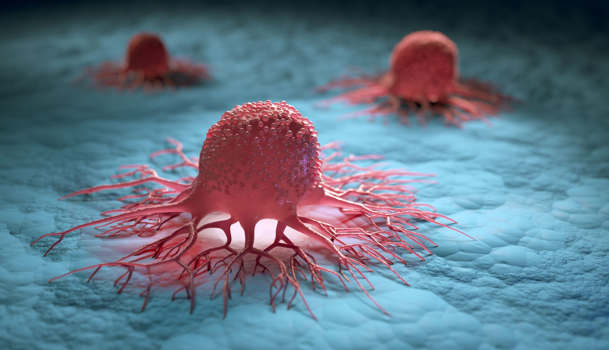

L’intelligence artificielle en renfort pour aider au dépistage du cancer
16/10/2023 --- Source : lepoint.fr
La révolution de l'IA en médecine progresse rapidement, avec l'anticipation que tous les professionnels de la santé l'adopteront dans leur pratique quotidienne d'ici quelques années. Des solutions opérationnelles sont déjà déployées, notamment dans les hôpitaux. La cancérologie émerge comme un domaine clé où l'IA pourrait avoir un impact décisif, avec de nombreuses études se concentrant sur son utilité, en particulier en soutien au diagnostic.

Une IA validée pour le diagnostic du cancer du sein
L'institut Curie et son partenaire Ibex Medical Analytics ont développé un algorithme performant capable de diagnostiquer les cancers du sein lors de biopsies, présentant une précision similaire à celle des pathologistes experts. Cet algorithme peut identifier plus de 50 caractéristiques spécifiques du sein. Dans la lecture des mammographies de dépistage, une étude a montré que l'IA a des performances comparables à celles des humains en termes de sensibilité et de spécificité. L'association de l'intelligence artificielle avec l'expertise humaine offre des niveaux de précision sans précédent, de l'imagerie médicale à l'analyse des prélèvements.
L'IA s'invite au cœur d'une chirurgie du cerveau
Deux outils basés sur l'IA, Sturgeon développé par des scientifiques néerlandais et Charm de la Harvard Medical School, offrent aux neurochirurgiens des informations en temps réel sur le génome des tumeurs pendant les opérations. Selon une étude de la revue Nature, Sturgeon permet une analyse ADN de la tumeur en 90 minutes, fournissant des informations cruciales pour guider le geste chirurgical. Charm, actuellement en validation clinique, a montré une précision de 93 % dans la distinction des tumeurs, selon des études.
L'IA pour le cancer du pancréas
On nous présente aussi une avancée dans le domaine du cancer du pancréas grâce à l'intelligence artificielle. Un modèle d'IA développé par Owkin et l'Assistance publique-Hôpitaux de Paris peut prédire précisément le profil moléculaire des tumeurs, évaluer le pronostic vital, et classifier les patients en fonction du profil tumoral pour les orienter vers des traitements pertinents. Une autre étude, publiée dans Nature Medicine, présente un outil d'IA créé par des chercheurs de la Harvard Medical School et de l'université de Copenhague en collaboration avec VA Boston Healthcare System. Cet outil, formé sur 9 millions de dossiers de patients du Danemark et des États-Unis, peut identifier les personnes à risque de développer un cancer du pancréas en examinant des facteurs tels que les calculs biliaires, le diabète de type 2, ou l'inflammation du pancréas.